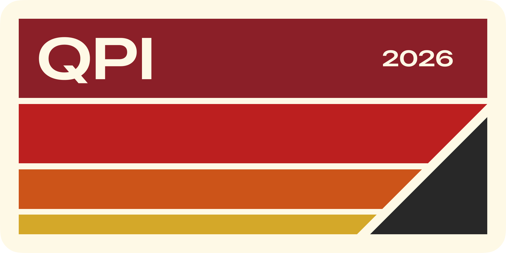

PDF-DS 디자인 시스템
일관성 있는 디지털 경험의 시작.

PDF-DS (Piece Design System)는 QPI의 모든 프로덕트를 잇는 일관된 디자인 언어입니다.
컴포넌트의 재사용성을 극대화하여 개발과 디자인의 간극을 좁히고, 가장 빠르고 우아하게 사용자 경험을 구축합니다.
일관성 있는 디지털 경험의 시작.

PDF-DS (Piece Design System)는 QPI의 모든 프로덕트를 잇는 일관된 디자인 언어입니다.
컴포넌트의 재사용성을 극대화하여 개발과 디자인의 간극을 좁히고, 가장 빠르고 우아하게 사용자 경험을 구축합니다.
고뇌는 얇게. 통찰은 깊게.

Dasein; [다자인;]은 연구자의 시간을 오직 사유의 가치로 되돌려 놓습니다. 방대한 학술 데이터를 덜어내고, 하나의 명료한 통찰을 발견하십시오.
이 모든 경험의 중심에는 한층 진화한 지능형 엔진 QISS가 함께합니다. 검색을 넘어 연구의 맥락을 짚어내는 학술 전문 플랫폼으로의 도약, 스마트함 그 자체를 경험해 보세요.
상상력이 현실이 되는 곳, 웹소설 플랫폼.
노벨파이는 누구나 작가가 될 수 있는 차세대 웹소설 연재 플랫폼입니다.
쾌적한 에디터 환경과 독자 친화적인 뷰어를 통해 오직 이야기에만 온전히 몰입할 수 있는 최적의 창작 생태계를 제공합니다.
누구도 엿볼 수 없는 완벽한 E2EE 메신저.
QPI Chat은 종단간 암호화(End-to-End Encryption)를 기본으로 채택한 가장 안전하고 프라이빗한 채팅 솔루션입니다.
서버에도 대화 내용이 평문으로 남지 않아, 그 어떤 민감한 정보도 안심하고 주고받을 수 있습니다.
낮말은 새가 듣고, 밤말은 내 기기만 듣는다.

FreeView는 당신의 프라이버시를 위해 가장 정교한 기술을 가장 조용하게 가동합니다.
DNS 감시 방지와 SNI 파편화 기술은 가로막힌 장벽을 소리 없이 무너뜨리며, 인터넷을 향한 당신의 걸음이 누군가의 기록으로 남지 않도록 철저히 보호합니다.
가장 직관적인 설치형 영상 다운로더.
qdown은 강력한 yt-dlp 엔진을 바탕으로 제작된 데스크톱 GUI 프로그램입니다.
명령어 입력의 번거로움 없이 클릭 몇 번으로 유튜브 등 다양한 플랫폼의 고화질 영상과 오디오를 원하는 포맷으로 손쉽게 추출하세요.
터치 한 번에 끝나는 좌석 확보.

매일 야간자율학습 시간, 1층 언어학습실에서 열리는 충곽 스터디카페를 예약하세요.
오픈런 할 필요 없이, 스마트 기기 하나로 빠르고 간편하게 좌석을 확보할 수 있습니다.
충곽 스터디카페 예약 시스템은 2025년 한정 서비스로, 2026년 현재는 실제 예약 및 이용이 불가능합니다.
work-in-progress (2026년 공개)

시계와 나란히 걷는 하늘.
24시간 실시간 연동이 선사하는 경이로운 몰입감.
현재 제공되는 기술 데모는 구버전 빌드로, 최적화 등의 문제가 발생할 수 있으며 최종 배포 버전과 상이할 수 있습니다.
제공중인 기술 데모에서는 Exynos 2100을 비롯한 Mali 아키텍처 기반의 GPU 및 일부 저사양 모바일 AP에서 프레임 드랍 및 끊김 현상이 발생하고 있습니다. 최신 빌드에서는 최적화 작업을 통해 이러한 문제를 개선하였습니다.
원소 주기율표, 118개의 원소를 한눈에.

118개의 원소를 가장 직관적으로. 카테고리별 네온 하이라이트를 통해 복잡한 원소 주기율표를 한눈에 더 쉽고 선명하게 파악할 수 있는 차세대 교육용 도구입니다.
바로가기